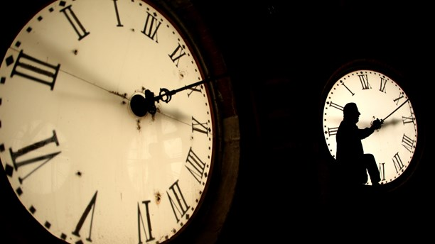

Tid är en sak, tideräkning något helt annat. Dan Jönsson reflekterar över tiden och det samtida, krafter som kan få både börser, människor och politiska system att krascha.

Vissa böcker ska man inte sätta i händerna på barn. Som Jules Vernes ”Jorden runt på åttio dagar” till exempel. Jag tror jag var tio år när jag läste den och det var alldeles för tidigt. Jag minns fortfarande den fullständigt vimmelkantiga känslan efter slutscenen, där Phileas Fogg kliver in på Reformklubben exakt ett dygn försenad – tror han: vad han inte inser är att han genom att ha färdats österut har tjänat ett dygn och i och med det helt oväntat har lyckats vinna vadet om de tjugotusen punden. Jag kunde inte sova på en vecka. Hur kunde Fogg ha tjänat ett dygn när han i verkligheten måste ha förlorat ett? I hans verklighet hade det ju gått åttioett dygn medan det för dem som höll sig hemma bara hade gått åttio? Betydde det i så fall inte också att han hade blivit ett dygn äldre än alla andra?
Sedan dess har jag förstått att Jules Vernes poäng var att visa att tid är en sak, tideräkning däremot något annat. Och att den skillnaden i en värld av moderna kommunikationer faktiskt får en praktisk betydelse. Det känns förstås bra att förstå det, även om jag också tror det kan vara bra att ha med sig den där barnsliga svindelkänslan i en värld som tycks ha tappat känslan för tid, där bara tideräkningen gäller. Den globala samtidighet som Jules Vernes roman anade födelsen av hanterar vi idag som en självklarhet. När vi landar någonstans efter en långflygning sätter vi oss och äter frukost även om det för oss egentligen är mitt i natten. När vi skypar med Australien stör vi oss på tidsfördröjningen i satellituppkopplingen. Allt sker på en gång överallt, samtidigt. I vår smartphone. Denna samtidighet är något vi aldrig kommer undan, och ständigt bär med oss.
Filosofen Hannah Arendt föreslår i inledningen till sin bok ”Människans villkor” att vår civilisation trädde in i en ny epok 1945, med den första atombomben. Hotet om total förintelse markerar den nya tidens slut och början på något annat, ett slags akut modernitet som vi så här ett drygt halvsekel senare kanske skulle kunna kalla ”det samtida”. Detta ”samtida” är förstås inget som uppstår över en natt. Det föds ur moderniteten när dess idéer om en värld i ständig framåtskridande förändring av olika skäl vittrar sönder eller får en otäck bismak av förödelse och död. Kommunismens fall och den kapitalistiska globaliseringen leder till föreställningar om ett historiens slut, där den moderna framstegstanken drivits till sin logiska slutpunkt, en ”nutopi”. Denna självtillräckliga samtidsvärld saknar förmågan att föreställa sig någonting bortom sin egen horisont, all förändring uppfattas därför som skrämmande.
Det samtida tillståndet är inte samma sak som samtidighet, men samtidigheten är en förutsättning för det. Det kräver därför något som den tyske författaren Rüdiger Safranski i sin fängslande lilla bok ”Tid” beskriver som ett ”församhälleligande” av tiden. Numera tänker vi knappt på det längre, men till och med inom ett land som Sverige skiljer sig den naturliga soltiden faktiskt ganska mycket mellan till exempel Bohuslän och Gotland. Det var en självklarhet förr, när varje ort hade sin lokala tid och tidshorisonten så att säga sammanföll med den geografiska. Men när järnvägarna började anläggas på artonhundratalet blev det ohållbart. En synkroniserad svensk normaltid infördes 1879, ungefär samtidigt som i de flesta europeiska länder. Med ens blev nationalstaten en gemenskap som gick att uppfatta inte bara i rummet, utan också i tiden. Nationen hölls ihop av sin samtidighet.
Safranski ser två konkreta förutsättningar för denna samhälleliga tid – klockan och pengarna. Medan klockan anger takten i det offentliga livet så blir pengarna ett sätt att ta kontroll över tidens flyktighet. Pengar är nämligen bland mycket annat ett medel för att skjuta upp konsumtion: en sorts tidskapsel med andra ord som gör det möjligt att välja mellan olika alternativ. Istället för att få lönen in natura kan jag med pengarna jag får kanske lägga undan lite och så småningom ta körkort eller köpa hus. Pengarna vidgar tidshorisonten, och alla penningtransaktioner innebär därför också en spekulation i framtiden, en handel med tid.
Men framtidsmöjligheterna existerar förstås bara där pengarna är giltiga. Som Safranski konstaterar bygger hela den samhälleliga tidsregimen på en fiktion där minsta tvivel kan räcka för allt ska falla ihop. Och det tycks som om ju större det samtidiga rummet blir, och ju mer friktionsfritt penningtransaktionerna kan utföras, desto bräckligare blir den här fiktionen. Finanskrisen 2008, skriver Safranski, måste ses som en kris för den ekonomiserade tiden – det visade sig kort sagt att den framtid som kreditsystemen hade spekulerat i redan var konsumerad. Globaliseringen och digitaliseringen har alltså paradoxalt nog krympt perspektiven på nytt, och ingenstans blir det så tydligt som i den samtida finansindustrin där transaktionernas tidshorisonter numera begränsas till mikrosekunder. Hur extremt sårbara systemen är visade sig under den så kallade Flash Crash i maj 2010, när den amerikanska aktiemarknaden totalkollapsade på ett par minuter och sedan återhämtade sig, efter att en automatiserad algoritm hade börjat löpa amok.
Finanskrisen blev på så vis också en kris för det samtida som idé. Krisen avslöjade helt enkelt det illusoriska i samtidigheten: hur den ekonomiska – och förstås mänskliga – verkligheten alltid utspelar sig i olika tider. Spekulantens hypersnabba vinster betecknar i systemets andra ände pensioner och bostäder som ska försäkra lån- och löntagare om en trygg framtid. Det är alltså tal om en skalförskjutning som märks inte bara i finansvärlden. Safranski beskriver till exempel hur vår tids alltmer intensiva transporter gör att tid och rum rent fysiskt kommer i konflikt med varandra: ”som om den förjagade tiden hämnas på rummet” när landskapet fylls med motorvägar, järnvägar och flygplatser. Och på ett rent vardagspsykologiskt plan märks det förstås i hur våra hjärnor får allt svårare att reagera på all information när det en gång så vidsträckta jordklotet har krympt ihop till en smartphones storlek. Förr eller senare får det konsekvenser.
Dessa konsekvenser kan alltså vara ekonomiska, i form av krascher och kriser. De kan vara mentala, i form av utbrändhet. Men de kan också vara politiska – något som blir uppenbart just nu, när det samtida tillståndets grundläggande konservatism tycks vara på väg att slå över i den reaktionära nostalgi som Zygmunt Bauman i sin sista bok har gett namnet ”retrotopi”. Kanske är det så enkelt att framtidstro kräver viss besinning? Lite perspektiv? Poeten och gör-det-själv-filosofen Ladislaus Horatius brukade ha för vana att med jämna mellanrum dra i snabbtågens nödbromsar i protest mot accelerationen. De australiska aboriginerna brukade efter en lång vandring sätta sig ner i några timmar för att själarna skulle hinna ifatt. Själva kan vi kanske då och då kasta en blick mot stjärnorna och ägna en flyktig tanke åt att det vi ser egentligen är en sedan flera miljoner år förgången värld. Bara så vi inte skrattar om vår tioåring har lite svårt att sova efter att ha läst Jules Verne.